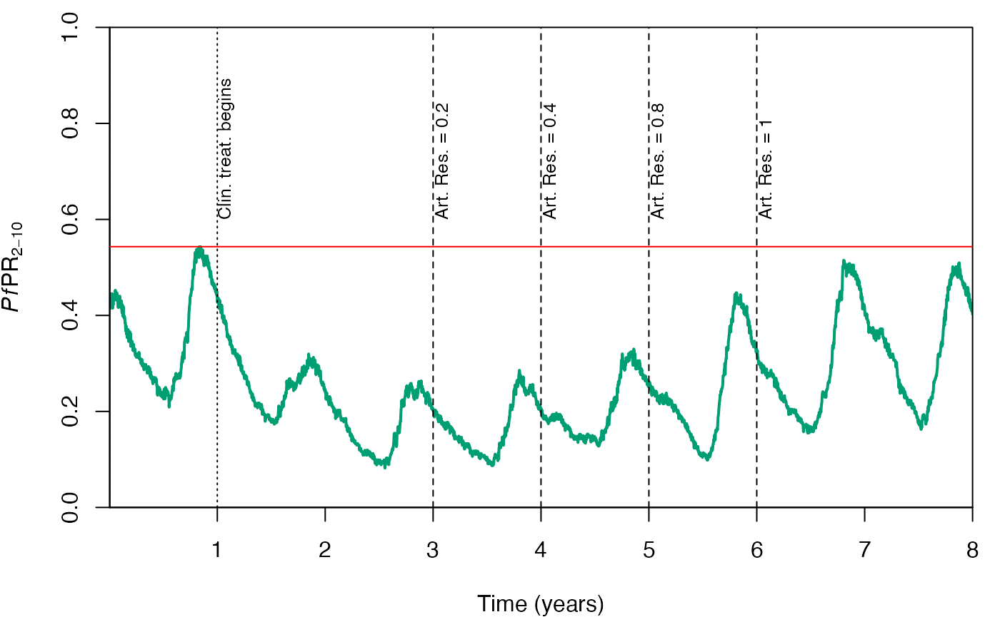
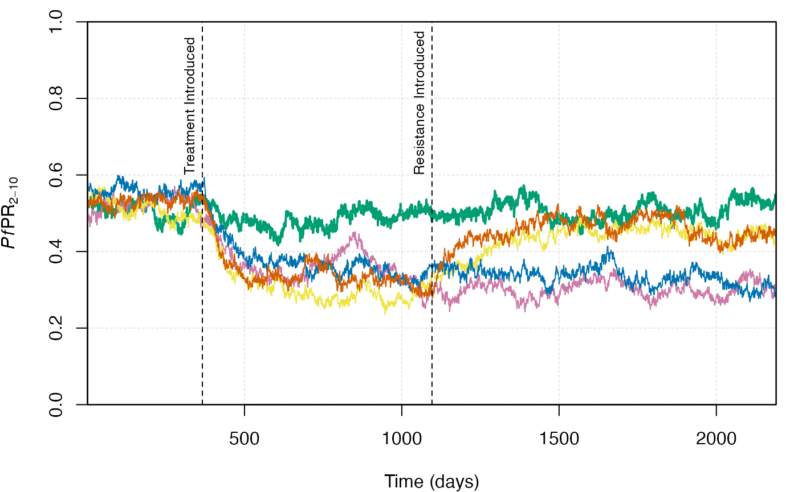

Antimalarial Resistance
Antimalarial_Resistance.Rmd
# Load the requisite packages:
library(malariasimulation)
# Set colour palette:
cols <- c("#E69F00", "#56B4E9", "#009E73", "#CC79A7","#F0E442", "#0072B2", "#D55E00")Introduction
One of the major threats to the continued success of efforts to
reduce the burden of malaria is the evolution and spread of resistance
to the antimalarial drugs used to treat uncomplicated cases of malaria.
The most effective frontline antimalarials are a class of drugs called
artemisinin combination therapies (ACTs). ACTs combine a fast-acting,
short-lived artemisinin derivative (e.g. artemether), with a
slower-acting, longer-lasting partner drug (e.g. lumefantrine) that
clears the remaining parasites from the patient’s system. Efforts to
understand the effect of resistance to ACTs on malaria morbidity and
mortality, and to develop strategies to control or mitigate the spread
of resistance, would benefit from insights derived from mathematical
modelling. Building on the model developed by Slater et al. (2016),
malariasimulation provides the functionality to simulate
the effects of resistance to the artemisinin and/or partner drug
components to multiple, independent ACTs, on malaria transmission
dynamics.
Resistance to the artemisinin component of an ACT can result either
in slow parasite clearance (SPC), in which treatment with an ACT takes
longer than 3 days to fully clear patients with resistant parasites, or
early treatment failure (ETF), in which the ACT fails to clear the
infection and the individual develops a clinical infection. Resistance
to the partner drug, where the partner drug fails to clear the parasite
after the artemisinin derivative is depleted, results in infections
recrudescing to either clinical (D) or asymptomatic infections (A).
Resistance to the partner drug can also result in individuals developing
a novel, resistant infection following treatment, as the prophylaxis
provided by the ACT fails to protect the individual against reinfection
by a resistant strain. In the following vignette, we illustrate how to
parameterise and run malariasimulation simulations with
resistance to ACTs deployed as a clinical treatment
Using set_antimalarial_resistance() to parameterise resistance
Simulations capturing the effects of resistance to clinical treatment
using antimalarial drugs are parameterised using the
set_antimalarial_resistance() function. This function
appends user-defined resistance parameters to a
malariasimulation parameter list and accepts ten inputs.
The first is a list of malariasimulation parameters to
append the resistance parameters to, and the second the index of the
drug for which resistance is being parameterised, as set
using the set_drugs() function. The
set_antimalarial_resistance() function requires the
timesteps, artemisinin_resistance_proportion,
partner_drug_resistance_proportion_proportion,
slow_parasite_clearance_probability,
early_treatment_failure_probability,
late_clinical_failure_probability,
late_parasitological_failure_prob, and
reinfection_during_prophylaxis_probability inputs to be of
equal length so that, for each time step in which an update occurs, a
value is available for each parameter. Finally, the
slow_parasite_clearance_time parameter represents the mean
residence time, in days, for artemisinin-resistant individuals
experiencing slow parasite clearance (SPC) in the Treated compartment,
and must be input as a single, positive value.
Simulating static resistance
To illustrate how to parameterise resistance to an ACT using the
set_antimalarial_resistance() function, we’ll set-up and
run three simulations. The first simulates malaria transmission in the
absence of interventions or resistance. The second simulates a simple
regime of clinical treatment in which 80% of clinical cases are treated
with artemether lumefantrine (AL), beginning after one year, in the
absence of antimalarial resistance. The third simulates the same
clinical treatment programme but with resistance to the artemisinin
component of AL emerging after two years. For illustrative purposes, we
assume that the proportion of infections resistant to the artemisinin
component of AL increases from 0% to 80%, and that these infections have
a 90% chance of resulting in early treatment failure.
Parameterisation
First, we load the default malariasimulation model
parameters, using the overrides argument to increase the
human population. The human and mosquito population parameters are then
calibrated to a user-specified initial EIR using the
set_equilibrium() function. Next, we load the in-built
parameters for the antimalarial drug AL and append them to the parameter
list using set_drugs(). We can then use
set_clinical_treatment() to specify a clinical treatment
regime, beginning after one year, that treats, on average, 80% of the
clinical cases of malaria with AL (AL_params). The
set_antimalarial_resistance() function is then used to
specify a scenario in which resistance is initially absent from the
population, but after two years the proportion of malaria infections
that are resistant to the artemisinin component of AL rises to 80%. We
also set the probability that artemisinin-resistant infections result in
early treatment failure to 0.9. In the current instance, we’ve set the
proportion of infections resistant to the AL partner drug to 0% and the
probabilities of other resistant infection outcomes to zero for
simplicity.
# Specify the time steps over which to simulate:
timesteps <- 365 * 3
# Specify an initial EIR to calibrate to:
init_EIR <- 8
# Specify a time step for treatment to begin:
treatment_start <- (1 * 365) + 1
# Specify a time step for resistance to emerge:
resistance_start <- (2 * 365) + 1
# Load the base malariasimulation parameter set:
simparams <- get_parameters(
overrides = list(
human_population = 10000)
)
# Calibrate to the initial EIR:
simparams <- set_equilibrium(parameters = simparams, init_EIR = init_EIR)
# Append the parameters for artemether lumefantrine (AL) to the parameter list:
simparams_clin_treatment <- set_drugs(parameters = simparams, drugs = list(AL_params))
# Use the set_clinical_treatment() function to specify a treatment regime for AL:
simparams_clin_treatment <- set_clinical_treatment(parameters = simparams_clin_treatment,
drug = 1,
timesteps = treatment_start,
coverages = 0.8)
# Use the set_antimalarial_resistance() function to specify resistance to AL:
simparams_resistance <- set_antimalarial_resistance(parameters = simparams_clin_treatment,
drug = 1,
timesteps = c(0, resistance_start),
artemisinin_resistance_proportion = c(0, 0.8),
partner_drug_resistance_proportion = rep(0, 2),
slow_parasite_clearance_probability = rep(0, 2),
early_treatment_failure_probability = c(0, 0.9),
late_clinical_failure_probability = rep(0, 2),
late_parasitological_failure_probability = rep(0, 2),
reinfection_during_prophylaxis_probability = rep(0, 2),
slow_parasite_clearance_time = 10)Simulation
We can now use the run_simulation() to simulate the
three scenarios for which we have established parameter lists above.
# Baseline: No-intervention, no resistance simulation:
sim_out_baseline <- run_simulation(timesteps = timesteps, parameters = simparams)
# Clinical treatment with no antimalarial drug resistance:
sim_out_clin_treatment <- run_simulation(timesteps = timesteps, parameters = simparams_clin_treatment)
# Clinical treatment with antimalarial drug resistance:
sim_out_resistance <- run_simulation(timesteps = timesteps, parameters = simparams_resistance)Visualisation
With the outputs from the run_simulation() function, we
can visualise the effect of resistance on malaria transmission by
plotting the prevalence of malaria in children aged 2-10 years old
(PfPR2-10) over time.
# In each timestep, calculate PfPR_2-10 and add it to as a new column for each simulation output:
sim_out_baseline$pfpr210 = sim_out_baseline$n_detect_lm_730_3650/sim_out_baseline$n_age_730_3650
sim_out_clin_treatment$pfpr210 = sim_out_clin_treatment$n_detect_lm_730_3650/sim_out_clin_treatment$n_age_730_3650
sim_out_resistance$pfpr210 = sim_out_resistance$n_detect_lm_730_3650/sim_out_resistance$n_age_730_3650
# Plot the prevalence through time in each of the three simulated scenarios:
plot.new(); par(mar = c(4, 4, 1, 1), new = TRUE)
plot(x = sim_out_baseline$timestep, y = sim_out_baseline$pfpr210,
xlab = "Time (days)",
ylab = expression(paste(italic(Pf),"PR"[2-10])), cex = 0.7,
ylim = c(0, 1), type = "l", lwd = 2, xaxs = "i", yaxs = "i",
col = cols[3])
# Add a line for the clinical treatment scenario:
lines(x = sim_out_clin_treatment$timestep,
y = sim_out_clin_treatment$pfpr210,
col = cols[4])
# Add a line for the clinical treatment with resistance scenario:
lines(x = sim_out_resistance$timestep,
y = sim_out_resistance$pfpr210,
col = cols[7])
# Add lines to indicate the initiation of treatment and resistance:
abline(v = treatment_start, lty = "dashed")
abline(v = resistance_start, lty = "dashed")
# Annotate the added vlines:
text(x = treatment_start + 10, y = 0.9, labels = "Start of\nTreatment", adj = 0, cex = 0.7)
text(x = resistance_start + 10, y = 0.9, labels = "Start of\nResistance", adj = 0, cex = 0.7)
# Add gridlines:
grid(lty = 2, col = "grey80", nx = NULL, ny = NULL, lwd = 0.5); box()
# Add a legend:
legend(x = 20, y = 0.99, legend = c("Baseline", "Treatment", "Resistance"),
col= c(cols[3:4], cols[7]), box.col = "white",
lwd = 1, lty = c(1, 1), cex = 0.7)
In the absence of clinical treatment or resistance, prevalence is comparable between all three scenarios for the first year. Following the initiation of clinical treatment at the beginning of the second year, PfPR2-10 approximately halves relative to the no-intervention baseline. However, following the introduction of artemisinin resistance at the beginning of the third year, early treatment failure causes the PfPR2-10 to increase to an intermediate level in the resistance scenario.
Simulating dynamic resistance
We can also capture scenarios in which resistance to a drug changes through time. To illustrate, we’ll establish and simulate a scenario in which resistance to sulfadoxine-pyrimethamine amodiaquine (SP-AQ) is absent from the population in the first year, but emerges in the third year and doubles in proportion each year thereafter until 100% of infections are artemisinin resistant. For simplicity, we’ll assume only artemisinin resistance is present in the population, and resistance to artemisinin results only, and always, in early treatment failure.
Parameterisation
First, we store in vectors the artemisinin resistance proportions and
the time steps on which they will be updated in the simulation. We also
create a vector of early treatment failure probabilities which, for
simplicity, we assume remain at 1 for each update. Next, we load the
default malariasimulation parameter set, specifying a
larger population size and seasonal transmission, and append the
parameters for SP-AQ (SP_AQ_params) using the
set_drugs() function. We’ll specify a simple treatment
regimen using set_clinical_treatment() where, on average,
80% of clinical cases are treated with SP-AQ, beginning after one year.
We then specify a resistance schedule in which artemisinin resistance is
introduced at a proportion of 0.2 after 3 years, and doubles each year
thereafter until all infections are artemisinin resistant. Finally, we
calibrate the human and mosquito population parameters to a defined
entomological inoculation rate (EIR) and are ready to run the
simulation.
# Specify the time steps over which to simulate:
timesteps <- 365 * 8
# Set an initial EIR value:
initial_eir <- 8
# Specify the proportion of infections that are artemisinin resistant:
resistance_updates <- c(0, 0.2, 0.4, 0.8, 1)
# Specify the time steps in which to update the resistance parameters:
resistance_update_timesteps <- c(0, seq(3*365, 6*365, by = 365))
# Specify the probability artemisinin resistance infections result in early treatment failure:
early_treatment_failure_updates <- rep(1, length(resistance_update_timesteps))
# Load the base malariasimulation parameter set, with seasonal transmission:
simparams <- get_parameters(
overrides = list(
human_population = 1000,
model_seasonality = TRUE,
g0 = 0.284596,
g = c(-0.317878,-0.0017527,0.116455),
h = c(-0.331361,0.293128,-0.0617547)
))
# Append the parameters for sulfadomamine pyrimethaine (SP-AQ) to the parameter list:
simparams <- set_drugs(parameters = simparams, drugs = list(SP_AQ_params))
# Use the set_clinical_treatment() function to specify a treatment regime for SP-AQ:
simparams <- set_clinical_treatment(parameters = simparams,
drug = 1,
timesteps = 365 * 1,
coverages = 0.8)
# Use the set_antimalarial_resistance() function to specify resistance to SP-AQ:
simparams <- set_antimalarial_resistance(parameters = simparams,
drug = 1,
timesteps = resistance_update_timesteps,
artemisinin_resistance_proportion = resistance_updates,
partner_drug_resistance_proportion = rep(0, length(resistance_update_timesteps)),
slow_parasite_clearance_probability = rep(0, length(resistance_update_timesteps)),
early_treatment_failure_probability = early_treatment_failure_updates,
late_clinical_failure_probability = rep(0, length(resistance_update_timesteps)),
late_parasitological_failure_probability = rep(0, length(resistance_update_timesteps)),
reinfection_during_prophylaxis_probability = rep(0, length(resistance_update_timesteps)),
slow_parasite_clearance_time = 10)
# Calibrate the parameters to an initial EIR:
simparams <- set_equilibrium(parameters = simparams, init_EIR = initial_eir)Simulation
We can now use our parameter list to run the simulation using the the
run_simulation() function.
# Run the simulation:
dynamic_resistance_output <- run_simulation(timesteps = timesteps, parameters = simparams)Visualisation
We can visualise the effect of increasing resistance through time by plotting the PfPR2-10. We’ve added vertical lines to indicate when clinical treatment begins, and when the proportion of infections resistant to artemisinin is updated.
# Calculate the prevalence (PfPR210) through time:
dynamic_resistance_output$pfpr210 <- dynamic_resistance_output$n_detect_lm_730_3650/dynamic_resistance_output$n_age_730_3650
# Open a new plotting window and add a grid:
plot.new(); par(mar = c(4, 4, 1, 1), new = TRUE)
plot(x = dynamic_resistance_output$timestep,
y = dynamic_resistance_output$pfpr210,
xaxt = "n",
xlab = "Time (years)",
ylab = expression(paste(italic(Pf),"PR"[2-10])), cex = 0.8,
ylim = c(0, 1), type = "l", lwd = 2, xaxs = "i", yaxs = "i",
col = cols[3])
# Specify x-axis ticks and labels:
axis(1, at = seq(0, 8 * 365, by = 365), labels = seq(0, 8 * 365, by = 365)/365)
# Add a line indicating the start of the clinical treatment:
abline(v = 365, lty = "dotted")
# Add lines indicating when resistance is updated:
abline(v = resistance_update_timesteps, lty = "dashed")
# Add a line highlighting the maximum PfPR_2-10 value prior to treatment or resistance:
abline(h = max(dynamic_resistance_output$pfpr210[1:365]), col = "red")
# Add annotations for the vlines:
text(x = 365 + 30, y = 0.6, labels = "Clin. treat. begins", adj = 0, cex = 0.8, srt = 90)
text(x = resistance_update_timesteps[2:5] + 30, y = 0.6, labels = paste0("Art. Res. = ", resistance_updates[2:5]),
adj = 0, cex = 0.8, srt = 90)
Looking at the figure, we can see that the PfPR2-10 decreases over the two years following the onset of clinical treatment in the absence of artemisinin resistance. However, as resistance is introduced and increases through time, the PfPR2-10 increases towards the pre-intervention seasonal peak as SP-AQ becomes increasingly ineffective in the treatment of clinical cases of malaria.
Simulating antimalarial resistance with multiple resistance outcomes
As we’ve discussed, resistance to an ACT can manifest in multiple ways. For instance, resistance to the artemisinin component of an ACT can result in either early treatment failure or slow parasite clearance.
Using malariasimulation, we can simulate the effects of
multiple potential outcomes of resistance on malaria transmission
dynamics. To illustrate, we’ll parameterise and run a series of
simulations in is i) no clinical treatment, ii) no resistance, iii)
resistance with early treatment failure, iv) resistance with slow
parasite clearance, and v) resistance with early treatment failure and
slow parasite clearance.
Parameterisation
# Determine the number of timesteps to run for:
timesteps <- 365 * 6
# Set up a list to store the simulation parameter lists in:
simulation_parameters <- list()
# Establish a list of the base parameters with no clinical treatment or antimalarial resistance:
get_parameters(overrides = list(human_population = 1000)) -> simulation_parameters$base
# Establish a parameter list with clinical treatment starting after one year:
simulation_parameters$base |>
set_drugs(drugs = list(AL_params)) |>
set_clinical_treatment(drug = 1, timesteps = (365 * 1) + 1, coverages = c(0.8)) |>
set_equilibrium(init_EIR = 16) -> simulation_parameters$treatment
# Set the equilibrium for the base parameters:
simulation_parameters$base |>
set_equilibrium(init_EIR = 16) -> simulation_parameters$base
# Establish a parameter list with clinical treatment and early treatment failure
simulation_parameters$treatment |>
set_antimalarial_resistance(drug = 1,
timesteps = c(0, (365 * 3) + 1),
artemisinin_resistance_proportion = c(0, 0.8),
partner_drug_resistance_proportion = c(0, 0),
slow_parasite_clearance_probability = c(0, 0),
early_treatment_failure_probability = c(0, 0.8),
late_clinical_failure_probability = c(0, 0),
late_parasitological_failure_probability = c(0, 0),
reinfection_during_prophylaxis_probability = c(0, 0),
slow_parasite_clearance_time = 10) -> simulation_parameters$etf
# Establish a parameter list with clinical treatment and slow parasite clearance
simulation_parameters$treatment |>
set_antimalarial_resistance(drug = 1,
timesteps = c(0, (365 * 3) + 1),
artemisinin_resistance_proportion = c(0, 0.8),
partner_drug_resistance_proportion = c(0, 0),
slow_parasite_clearance_probability = c(0, 0.8),
early_treatment_failure_probability = c(0, 0),
late_clinical_failure_probability = c(0, 0),
late_parasitological_failure_probability = c(0, 0),
reinfection_during_prophylaxis_probability = c(0, 0),
slow_parasite_clearance_time = 10) -> simulation_parameters$spc
# Establish a parameter list with clinical treatment, early treatment failure and slow parasite clearance:
simulation_parameters$treatment |>
set_antimalarial_resistance(drug = 1,
timesteps = c(0, (365 * 3) + 1),
artemisinin_resistance_proportion = c(0, 0.8),
partner_drug_resistance_proportion = c(0, 0),
slow_parasite_clearance_probability = c(0, 0.8),
early_treatment_failure_probability = c(0, 0.8),
late_clinical_failure_probability = c(0, 0),
late_parasitological_failure_probability = c(0, 0),
reinfection_during_prophylaxis_probability = c(0, 0),
slow_parasite_clearance_time = 10) -> simulation_parameters$etf_spcSimulation
We can now use our lists of malariasimulation parameters
to run the simulations.
# Open a list to store the simulation outputs in:
simulation_outputs <- list()
# Run the simulations
for(i in seq(length(simulation_parameters))) {
# Run the i-th simulation
simulation_temp <- run_simulation(timesteps = timesteps,
parameters = simulation_parameters[[i]])
# Append the simulation identifier:
simulation_temp$identifier <- names(simulation_parameters)[i]
# Append the ith simulation outputs to the combined simulation dataframe:
simulation_outputs[[names(simulation_parameters)[i]]] <- simulation_temp
# Print the number of columns in the i-th simulation outputs dataframe:
print(ncol(simulation_temp))
}
#> [1] 31
#> [1] 35
#> [1] 37
#> [1] 37
#> [1] 37Visualisation
We can compare the effects of independent resistance outcomes with combined resistance outcomes visually. In the following plot, we compare the PfPR2-10 between a baseline without any clinical treatment or antimalarial resistance, a clinical-treatment only run, a clinical treatment with early treatment failure run, a clinical treatment with slow parasite clearance run, and a clinical treatment with both early treatment failure and slow parasite clearance run.
# Open a new plotting window and add a grid:
plot.new(); par(mar = c(4, 4, 1, 1), new = TRUE)
# Plot malaria prevalence in 2-10 years through time:
plot(x = simulation_outputs$base$timestep,
y = simulation_outputs$base$n_detect_lm_730_3650/simulation_outputs$base$n_age_730_3650,
xlab = "Time (days)",
ylab = expression(paste(italic(Pf),"PR"[2-10])), cex = 0.8,
ylim = c(0, 1), type = "l", lwd = 2, xaxs = "i", yaxs = "i",
col = cols[3])
# Add the dynamics for no-intervention simulation
lines(x = simulation_outputs$treatment$timestep,
y = simulation_outputs$treatment$n_detect_lm_730_3650/simulation_outputs$treatment$n_age_730_3650,
col = cols[4])
lines(x = simulation_outputs$etf$timestep,
y = simulation_outputs$etf$n_detect_lm_730_3650/simulation_outputs$etf$n_age_730_3650,
col = cols[5])
lines(x = simulation_outputs$spc$timestep,
y = simulation_outputs$spc$n_detect_lm_730_3650/simulation_outputs$spc$n_age_730_3650,
col = cols[6])
lines(x = simulation_outputs$etf_spc$timestep,
y = simulation_outputs$etf_spc$n_detect_lm_730_3650/simulation_outputs$etf_spc$n_age_730_3650,
col = cols[7])
# Add vlines to indicate when SP-AQ were administered:
abline(v = 365 + 1, lty = "dashed", lwd = 1)
text(x = (365 * 1) - 40, y = 0.6, labels = "Treatment Introduced", adj = 0, cex = 0.8, srt = 90)
abline(v = (365 * 3) + 1, lty = "dashed", lwd = 1)
text(x = (365 * 3) - 40, y = 0.6, labels = "Resistance Introduced", adj = 0, cex = 0.8, srt = 90)
# Add gridlines:
grid(lty = 2, col = "grey80", nx = NULL, ny = NULL, lwd = 0.5); box()
# Add a legend:
legend(x = 3000, y = 0.99, legend = c("Baseline", "Treatment", "ETF-only", "SPC-only", "ETF and SPC"),
col= c(cols[3:7]), box.col = "white",
lwd = 1, lty = c(1, 1), cex = 0.8)